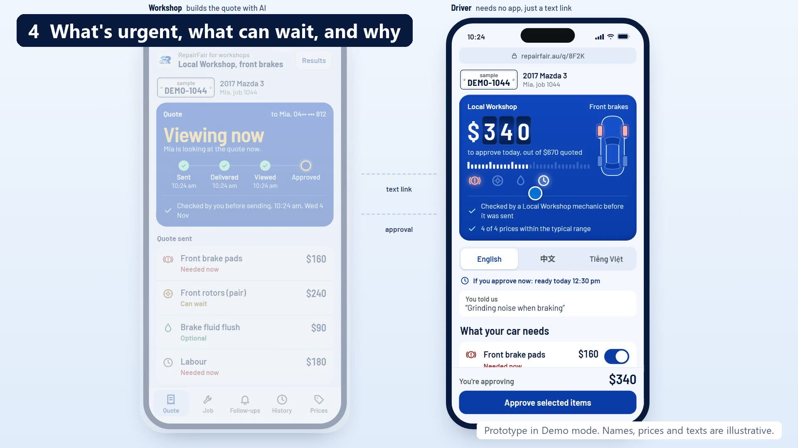
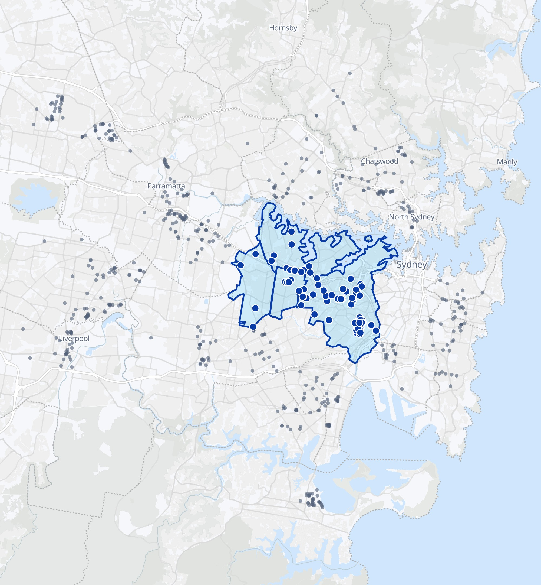

bad mechanic reviews are about surprise bills, unapproved work or work nobody needed.
AI-coded sample of 1,079 bad Google reviews across 90 Sydney workshops, not checked by a person. In our driver interviews, 5 of 10 bills rose by more than 10%.
It's not trust. It's the missing record.
The driver can't check the yes. The workshop can't prove it.
OK by phone?
CUSTOMER SIGNATURE
Every line. Approved in writing.
APPROVED

Click to play
Same job. Every line approved.
1Notes to quote
MECHANIC'S NOTES
Front pads 2mm
CHECKED BY MECHANIC
Quote ready
2Text link
SENT TO MIA
Open, read, decide
APP TO INSTALL
None
3Line by line
MIA'S DECISIONS
Pads: urgent, yes
Rotors: can wait
Extra hose: yes
4The invoice
FINAL BILL
$470
APPROVED
Demo job. AI quotes are real. Texts and phones are simulated.
AI turns a mechanic's notes into a clear quote.
AI writes it up. The mechanic decides.
Front pads at 2mm, need doing now. Rotors 22.4mm, can wait till next service.
→
Front brake padsNeeded now
Front rotorsCan wait
WORKSHOPS
We took it to 10 workshops.
6want to try it
4said they'd pay
3struggle to reach customers
Their feedback made written approval of extras our core. Why: save time and paperwork, cut disputes, build trust with customers. Now talking to two workshops about a free trial.
AI quotes are real. Texts and phones are simulated. Reasons come from interview notes and team conversations.
COMPETITION
Replace the paper quote and invoice.
Get a yes they understood.
Full workshop systems
RepairFair
What changes
Learn a full system
No full system to learn
Approval link
OneBookPlus: $15 add-on, plus its plan Workshop Software Gold: from $119 Workshop Hub Shop: $129
Free to 20 quotes, then $49
Own language
Not found
In the prototype
Examples from public pages, checked 2 Nov 2026, and we haven't tried these products. "Not found" doesn't mean a product lacks it. Prices are a month, ex GST where stated. RepairFair's are planned and ex GST.
PRICING
$49 a month.
Workshops pay. Drivers don't. Free up to 20 quotes, and our first workshops get six months free.
THE CUSTOMER
Understands the quote
THEN
Says yes faster
THE WORKSHOP
Extras get paid
Up to 50 fewer calls a month
"Not now" work comes back
Planned pricing, ex GST. Pro includes 300 texts a month. We estimate one hour of follow-up work covers $49. Calls: estimate, not measured. Assumes 100 quotes a month, with about half needing a mid-job approval. Faster replies are a belief the pilot will test.
INNER WEST

Start in the Inner West.
$10Ba year on service and repairs in Australia
6pilot
→
30founding
→
607+Sydney
→
~28,000independents
$16.5M a year at $49, $26.5M at $79, if every independent paid.
Rest of Sydney only after the pilot hits its target.
Then: light system → garage network → parts tier → the big players
Safaa and Sameep, for Group 8. Sameep has sourced car parts from China.
PILOT
One pilot. 6 garages. 3 months.
Help us make Mia's next bill no surprise. Target: three of six put a card on file.
We'll measure time explaining quotes, bills matching approvals, and whether drivers understood.
Fair for the driver. Protected for the workshop.
harsameepp@gmail.com
Backup
How the review study worked
Sample
607 workshops found; 15 picked at random in each of 6 regions, from those with 5+ bad reviews
Reviews
60 lowest-rated reviews per workshop, names removed: 1,079 one- and two-star reviews with text
Result
20.5% (range 15–25%): 6% bills or approval, 16% unnecessary work, with some overlap
Coding
AI-coded. Two more AI coders agreed on 90–93% of a 60-review sample. Not checked by a person.
Checks
20.6% without flagged reviews; 16% without the biggest three workshops. Bad reviews are about 7% of all reviews.
Backup
Competitors and pricing
Product
A month, ex GST
Customer approval
Workshop Software
Silver $119 ($99 yearly); Gold $149 ($119 yearly)
Gold and above: customer approves or rejects each item. Two-way texting add-on from $49
MechanicDesk
From $85
No approval link on its site. Paid digital signature add-on
Workshop Hub
Solo $59; Shop $129
Shop: customer approves each item. AI quotes and voice notes
OneBookPlus
Free base plan; workshop plans reported from $29 inc GST
SMS approval of extra work: $15 add-on
RepairFair (planned)
Free: 20 quotes. Pro $49: 300 texts, then 12c each. Founding workshops: first 6 months free. Later: a parts supply tier
Line-by-line approval by text link
$820k a year at 5% of workshops (illustrative). Break-even: $49 at about 40% kept after parts and wages, from the closest ATO benchmark. Our cost (estimate): about 20c a quote, mostly texts, plus $20–105 a month to host.
Backup
Features compared
RepairFair
Workshop Software Gold
Workshop Hub Shop
OneBookPlus
MechanicDesk
Price a month
Free to 20 quotes, then $49 (planned)
From $119
$129
$15 add-on, plus its plan
From $85
No full system needed
Yes
No
No
No
No
Approve each item by link
Prototype
Yes
Yes
Add-on, item level not confirmed
Not found
Approve mid-job extras
Prototype
Not found
Yes
Add-on
Not found
Customer's own language
Prototype
Not found
Not found
Not found
Not found
Urgency and plain reason on each line
Prototype
Not found
Not found
Not found
Not found
AI quote from notes
Prototype
Not found
Yes
Not found
Not found
Voice notes
Prototype, microphone untested
Not found
Yes
Not found
Not found
Invoicing
Prototype
Yes
Yes
Yes
Yes
Bookings and stock
No
Yes
Yes
Yes
Yes
Live product with real texts
No
Yes
Yes
Yes
Yes
From public pages, 2 Nov 2026. We haven't tried these products. "Not found" doesn't mean a product lacks it.
Backup
What's real in the prototype
Working
AI quote from a mechanic's notes
Suggested checks for the mechanic, not a diagnosis
Mechanic check and price book
Timestamped approvals in the app
Own-language view, voice notes, add-ons view
Invoice built from the approved quote
Simulated or sample
Both phones, texts and links
Booking times and Send to Xero
Parts price ranges and Results figures
Mia and the $470 bill are a demo
Planned: a live Xero connection. The export file hasn't been tested in Xero. Not yet tested: voice on a real microphone, or translations with a fluent speaker.